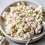

Chicken Salad

Description
This delicious piece meal is incredibly quick and easy to make with only a handful of ingredients. It's also a must have for some warm events and gatherings such as picnics.If you need a quick meal that will only take 10 minutes, then this is definately it! I'll show you how this recipe can be made and some neat tips along the way.
Ingredients
- 2 cups of cooked chicken
- 2 scallions finely diced
- 1/3 cup of mayonnaise
- 2 tablespoons of almonds
- 1 teaspoon of mustard
- 1/2 red pepper
- 1/2 teaspoon of lemon juice
- 2 tablespoons of greek yogurt
- Salt and pepper to taste
Preparation of Chicken Salad
- Stir mayonnaise, greek yogurt, scallions, mustard, lemon juice, salt and pepper.
- Toss it with remaining ingredients.
- Serve on bread, wrap or bed of lettuce.